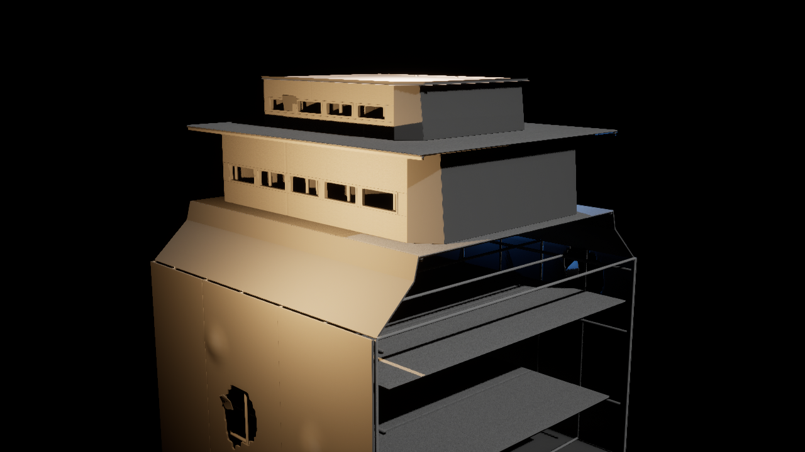
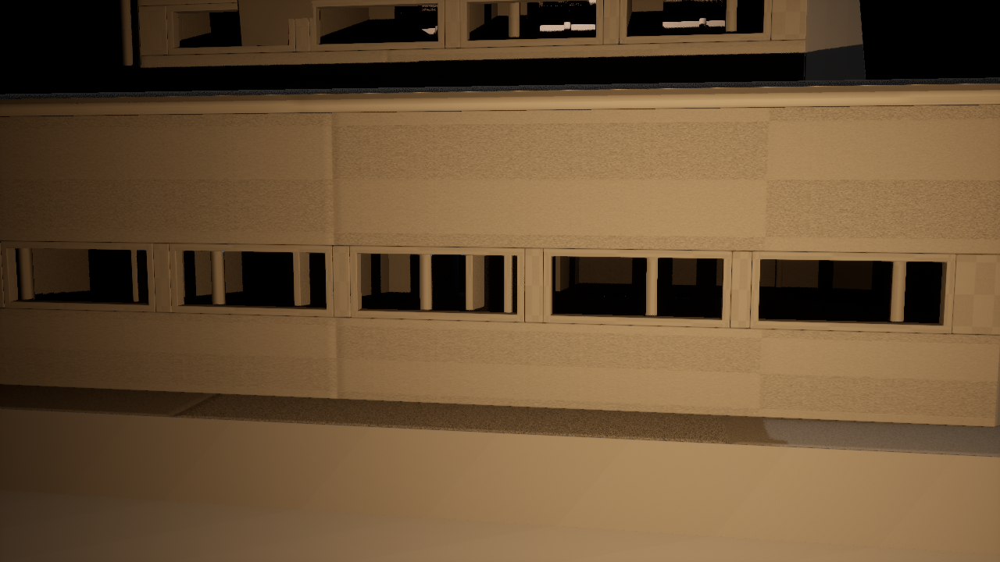
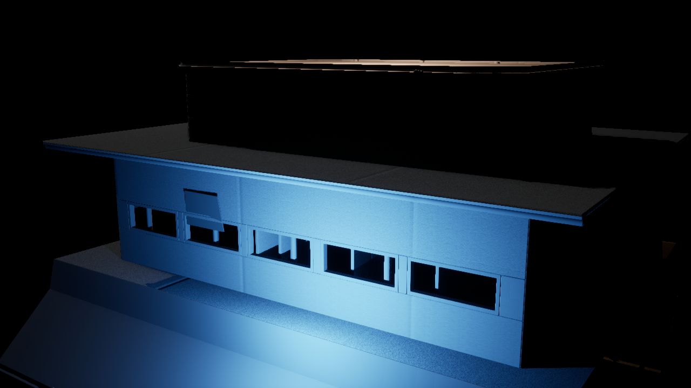
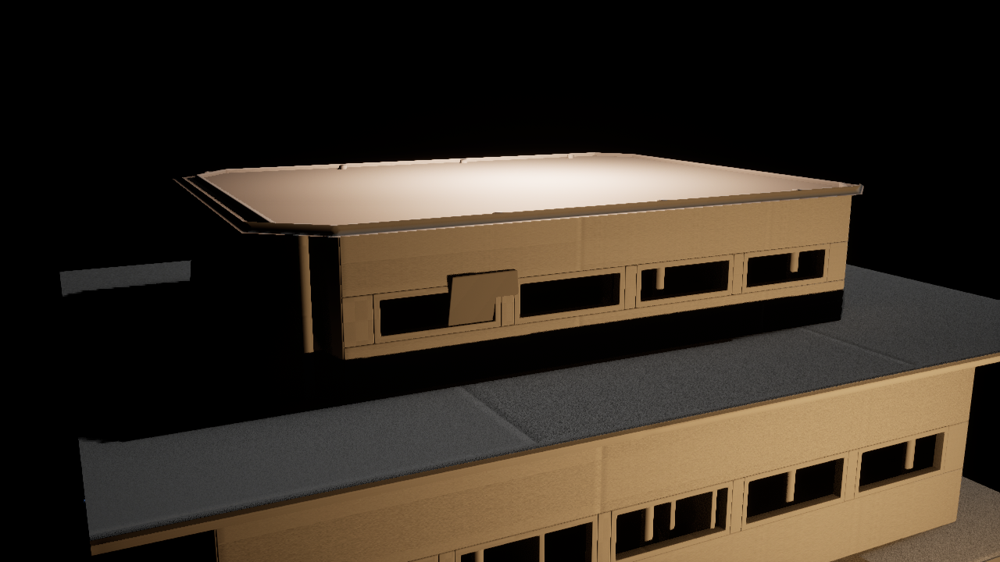
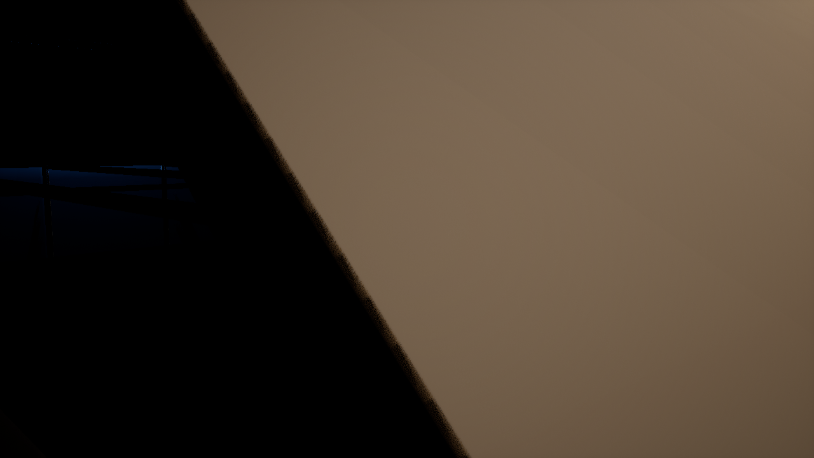

Automated QA PASS
Dimensions: 1715.0 × 1962.608 × 2088.0 cm exact export match.
Collision: complex-as-simple / BlockAll.
B1 main route: PASS · B1 upper: PASS · B2 lounge: PASS · B3 vehicle: PASS.
All 4 floor-support traces: PASS.
Main structural opening trace: PASS THROUGH EMPTY SPACE.
Upper structural opening trace: PASS THROUGH EMPTY SPACE.
Legacy Blender furniture exported: NO.
Glazing exported: NO.
Map Check: 0 errors / 0 warnings.
Exterior

Structural openings



Traversal references


Current Gate
PASS / FAIL / changes on V10 Unreal visual QA. On PASS, Section B structural geometry/gameplay is accepted and we can move to Meshy furniture / loose-item / broken-glass asset production while final materials remain deferred.